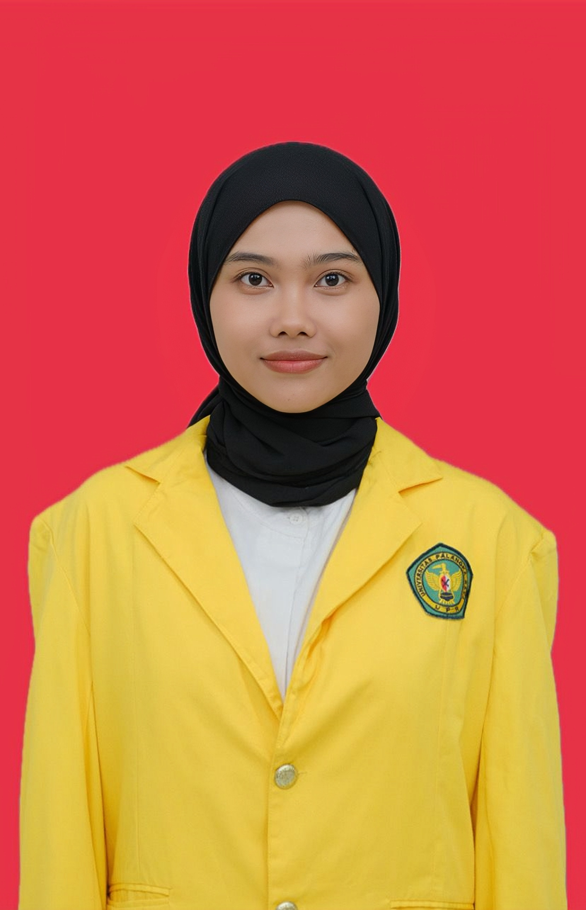
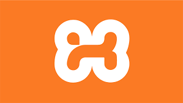
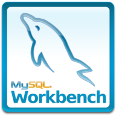
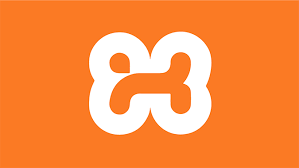
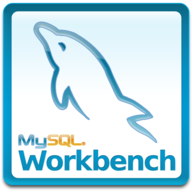
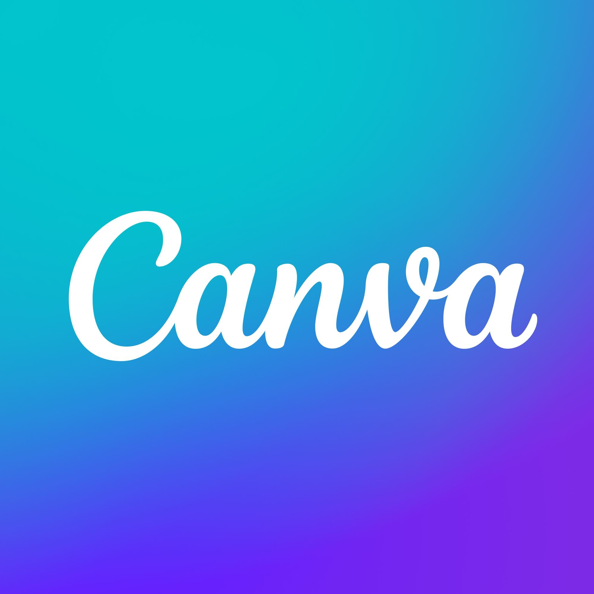
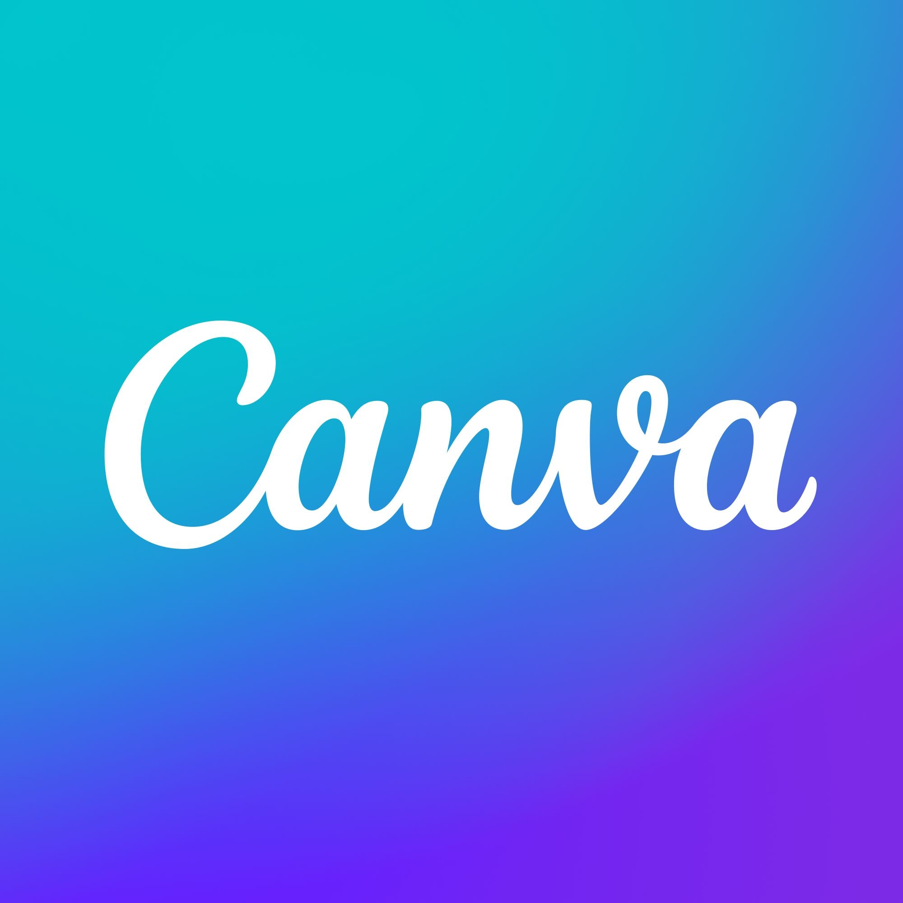

Halo, Saya Novia Fitriani
Saya adalah mahasiswa Teknik Informatika Universitas Palangka Raya angkatan 2022 dengan IPK 3.86. Memiliki kemampuan dalam pemrograman, desain grafis, manajemen waktu, dan bekerja dengan baik pada tim maupun individu.
📚 Pendidikan
- S1 Teknik Informatika – Universitas Palangka Raya (Sedang Berjalan)
🤹♂️ Keterampilan (Soft Skills)
- Komunikasi Efektif
- Kepemimpinan dan Manajemen Waktu
- Problem Solving
- Bertanggung jawab dan disiplin
🧰 Tools
 



 

💻 Bahasa Pemrograman


🧩 Framework

🎓 Pelatihan
-
Studi Independen Bersertifikat Platform and Web Developer (Specialist Education Platform) – 2024
MSIB Batch 7 Pada PT Maleo Edukasi Teknologi -
Sertifikasi BNSP Data Management Staff – 2024
Difasilitasi oleh Bank Indonesia melalui kegiatan sertifikasi bersama tim asesor dari LSP resmi -
Pelatihan Robotik UKM Sakti – 2022
UKM Sakti UPR
👥 Pengalaman Organisasi
-
Anggota Publikasi dan Sosialisasi – Generasi Baru Indonesia (GenBI) Kalimantan Tengah
• Ketua pelaksana Kreasi Fest, meliputi lomba poster, konten GNPIP, CBP, dan QRIS berhasil menarik pastisipan dengan total 81 peserta di kota Palangka Raya.
• Bertanggung jawab atas dokumentasi kegiatan GenBI (foto & video), serta publikasi konten media sosial dengan caption yang menarik. -
Sekretaris Komisi D (Eksternal dan Internal) – Dewan Perwakilan Mahasiswa Universitas Palangka Raya
• Mengawasi pelaksanaan program kerja dan kebijakan BEM
• Menjadi panitia dalam seminar legislatif yang diselenggarakan hasil kolaborasi dengan DPRD provinsi Kalteng.